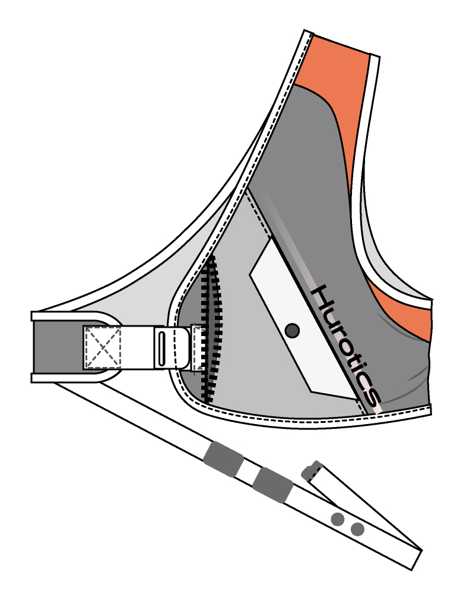
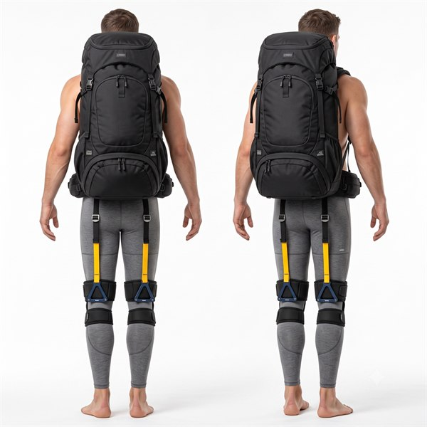
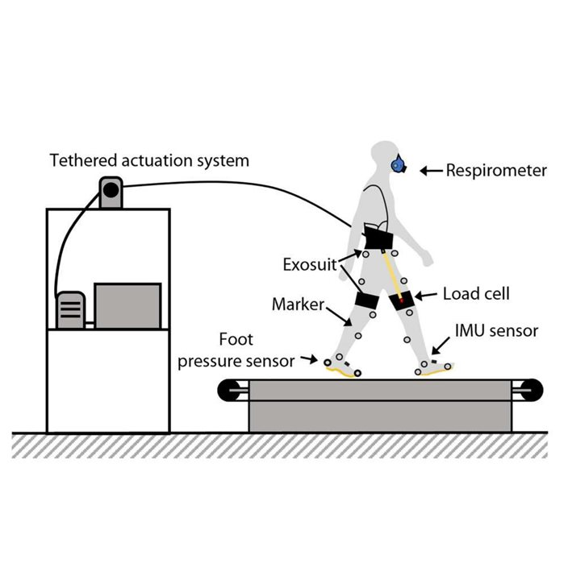
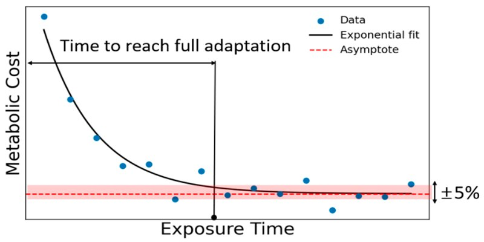
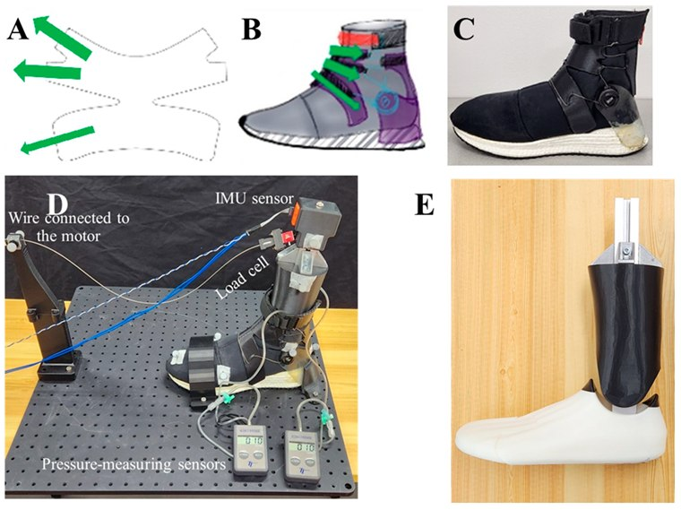

Research Highlights

▶ Hover to playPassive Exosuit for Golf Swing Performance
Pioneered a novel passive exosuit that harnesses elastic energy to boost golf swing speed by about 4% among skilled golfers.
Journal of Biomechanics, 2025
▶ Hover to playExosuit Assistance for Downhill Walking
This passive exosuit reduces the knee joint loading up to 7% during descent while maintaining lateral dynamic stability.
J. NeuroEng. Rehabil. 2026 ▶ Hover to play
▶ Hover to play
Mediolateral Balance Recovery with H-Medi
Rapid hip-abduction torque to recover mediolateral standing and walking balance without stepping — for fall prevention.
In progress
Improving Walking Economy with Hip-Abduction Assistance
Co-created an innovative soft exosuit that applies targeted hip-abduction forces, decreasing the metabolic demand of walking by 12%.
Science Robotics, 2023
Real-Time Hip Exosuit Adaptation via Deep Learning
Estimating user adaptation during hip-exosuit-assisted walking from wearable IMU data using long short-term memory deep-learning models.
Biomimetics, 2026
High-Collar Shoe for Ankle Sprain Prevention
Custom high-collar shoe and active variable-compression footwear to improve leg stiffness and prevent ankle sprain injuries.
Biomimetics · PLOS ONE, 2023